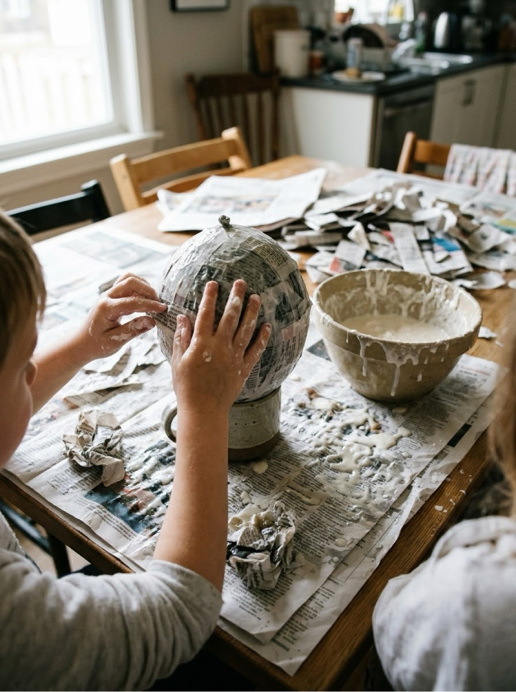
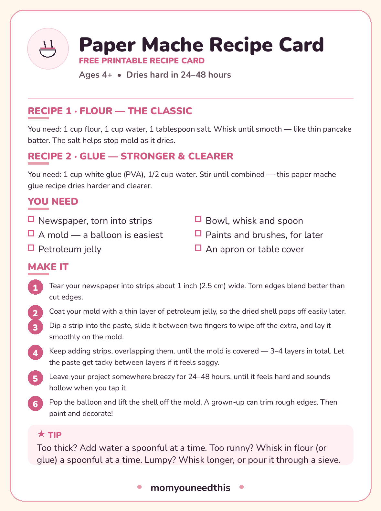

Paper Mache Recipe Two pastes — classic flour and stronger glue — plus the consistency and drying times nobody tells you
If you need a paper mache recipe that works the first time, you are in the right place: below are the only two pastes worth knowing — the classic flour recipe and a stronger glue version — with exact ratios, the consistency to aim for, and a fix for every way it usually goes wrong. Print the recipe card, cover the table, and start with a balloon. For ages 4 and up, with a grown-up handling the trimming at the end.
Last updated: October 21, 2026

Quick Answer
Flour paste: whisk 1 cup flour, 1 cup water and 1 tablespoon of salt until it looks like thin pancake batter. Glue paste: stir 1 cup white glue (PVA) with 1/2 cup water. Dip newspaper strips in the paste, wipe off the extra, smooth on 3–4 layers over a balloon or mold, then dry for 24–48 hours. Both recipes, the full method and the printable recipe card are below.
At a Glance
- Ages: 4+ (a grown-up trims and cuts at the end)
- What you get: 2 paste recipes, the full project method and a printable recipe card
- Drying time: 24–48 hours — plan for a two-day project
- Cost: Free — the flour version costs pennies in pantry staples
🥣 Recipe 1 — The Classic Flour Paste
This is the recipe most of us grew up with, and it is still the right default for big, simple projects: piñatas, bowls, suns and moons for school projects, and anything that will be painted and admired rather than handled daily. It costs almost nothing, mixes in two minutes, and washes off hands, tables and small arms with warm water.
Whisk 1 cup of all-purpose flour and 1 cup of water together until the paste is completely smooth — it should pour like thin pancake batter. Then stir in 1 tablespoon of salt. The salt is not seasoning; it discourages mold while your project spends two days drying, which matters in humid kitchens. If the paste feels like thick cake batter, whisk in water a spoonful at a time. Lumps are the enemy: they dry into bumps you can see through paint, so whisk longer than feels necessary, or pour the paste through a sieve.
One honest limitation: flour paste dries slightly soft and can attract pantry pests in storage, so finished pieces are best kept on display rather than boxed in a damp garage. Use it the day you mix it, or keep leftovers sealed in the fridge for two or three days at most.
🧴 Recipe 2 — The Stronger Glue Paste
When a project needs to survive — a mask that will be worn twenty times, a bowl that will actually hold things, anything a younger sibling will grab — use the glue version. This paper mache glue recipe is simply 1 cup of white glue (PVA) stirred with 1/2 cup of water until fully combined. That is all. No cooking, no salt needed, and leftover paste keeps for weeks in a sealed jar.
Glue paste dries noticeably harder and clearer than flour paste, takes paint beautifully, and shrugs off the minor knocks of real life. It costs more than flour, and it is stickier on small hands mid-project, so keep a damp cloth on the table for wiping fingers between strips. It is also the version to choose for gluten-free households, since no flour is involved at any point.
Which one should you pick? Flour for big, cheap and cheerful. Glue for smaller, stronger and kept. Plenty of families mix the two across one project — flour paste for the bulky first layers, a final layer in glue paste for a tougher skin — and that works perfectly well.
🛠️ Make a Paper Mache Project, Step by Step
Both pastes are used exactly the same way. This is the method the printable recipe card carries, so the page and the card never disagree:
- Newspaper, torn into strips
- A mold — a balloon is easiest
- Petroleum jelly
- Bowl, whisk and spoon
- Paints and brushes, for later
- An apron or table cover
- Tear your newspaper into strips about 1 inch (2.5 cm) wide. Torn edges blend better than cut edges.
- Coat your mold with a thin layer of petroleum jelly, so the dried shell pops off easily later.
- Dip a strip into the paste, slide it between two fingers to wipe off the extra, and lay it smoothly on the mold.
- Keep adding strips, overlapping them, until the mold is covered — 3–4 layers in total. Let the paste get tacky between layers if it feels soggy.
- Leave your project somewhere breezy for 24–48 hours, until it feels hard and sounds hollow when you tap it.
- Pop the balloon and lift the shell off the mold. A grown-up can trim rough edges. Then paint and decorate!

🥣 Download Your Free Paper Mache Recipe Card
Both recipes, the materials list and all six steps on one sheet
⬇️ Download Free Recipe Card 🖨️ Print🎁 Free printable for ages 4+
🎯 The Consistency You Are Aiming For
More paper mache projects fail on consistency than on any other step, and nobody describes it, so here is the test that matters. The paste — either recipe — should look like a smoothie or thin pancake batter: it pours, but slowly. Dip a strip, pull it out, and slide it between two fingers. Your fingers should come away with a thin, even film of paste on them, and the strip should look wet but not be dripping. A dripping strip is carrying too much paste, and excess paste is what makes projects soggy, slow to dry and prone to mold.
Too thick? Stir in water one spoonful at a time — it loosens fast. Too runny, more like milk than batter? Whisk in flour (or dribble in glue) a spoonful at a time until it coats the back of a spoon. And work in layers with patience: three or four thin, well-wiped layers dry harder and smoother than two gunky ones. If a half-covered project starts feeling like wet laundry, stop, let it get tacky for twenty minutes, and then continue.
⏰ Drying: The Part Everyone Underestimates
Paper mache needs 24 to 48 hours to dry fully, depending on layer count, paste thickness and the humidity in your house. A small fan pointed at the project genuinely helps. The test is touch plus sound: the shell should feel hard all over — no cool, soft spots, which mean wet paste hiding underneath — and it should sound hollow when you tap it with a fingernail.
Do not paint early. Paint seals moisture inside the shell, and trapped moisture is how you get mold spots and soft patches a week later. If you are making something for a deadline — a school project, a Halloween mask — count backwards from the day and give the drying its full two days. The actual hands-on work of paper mache is quick; the drying is the project.
🩹 Troubleshooting: Fixes for the Usual Problems
Nearly every problem below comes back to two causes — paste too thick, or a project painted before it was dry — and all of them are fixable or avoidable next round:
- Mold spots: the shell was painted or stored before drying fully. Dry in a breezy spot, use the salt in the flour recipe, and give it the full 48 hours.
- Cracks as it dries: layers were very thick, or it dried beside a heater. Thin layers, room-temperature drying.
- Saggy or collapsed shape: too much paste on the strips. Wipe every strip between two fingers — that one habit fixes most failures.
- Lumpy finish: the paste had lumps, or strips were cut, not torn. Torn edges feather into each other; whisk or sieve the paste.
- Shell stuck to the mold: the petroleum jelly layer was skipped. Coat the mold first; a balloon, of course, just gets popped.
- Bumpy paint job: usually dried paste drips. A quick sand with fine sandpaper (grown-up job) before painting smooths almost anything.
🎨 What to Make With It
A balloon base becomes a bowl (trim the dried hemisphere, paint the inside), a piñata (leave a flap for filling, add a fifth and sixth layer for strength), a planet, or the round body of almost any animal. Over a blown-up balloon inside a bowl for support, the same method makes masks — cut eye holes after drying, grown-up job — and it is the classic base for a Halloween pumpkin that never rots, which pairs well with the other projects in our Halloween crafts. Start with one balloon bowl. It teaches every skill in the method, it forgives everything, and it is genuinely useful afterwards — which is more than most first projects can claim.
🥣 More Crafty Fun
🎨 Crafts for Kids
The whole craft corner — seasonal card packs and projects by material. Visit the crafts hub.
🎃 Halloween Crafts for Kids
Six not-too-spooky projects for ages 3–6, including a paper mache pumpkin's best friends. See Halloween crafts.
⭐ Salt-Dough Ornaments & Winter Crafts
The other great kitchen-dough project, plus four more cozy winter crafts. See winter crafts.
📚 Free Resources Hub
Every free printable and activity on the site. Browse the hub.
❓ Frequently Asked Questions
What is the best paper mache recipe for kids?
For most projects, the flour recipe — 1 cup flour, 1 cup water, 1 tablespoon of salt — because it is cheap, quick and washes off with water. For projects that need to last and be handled a lot, like masks and bowls, the glue recipe (1 cup white glue to 1/2 cup water) dries harder and stronger. Both are on this page with a printable recipe card.
How long does paper mache take to dry?
Plan on 24 to 48 hours for 3–4 layers. Humidity, layer thickness and how much paste you wiped off all change the time. The shell is ready when it feels hard all over, with no cool soft spots, and sounds hollow when tapped. Painting before it is fully dry traps moisture inside and causes most mold problems.
Why do you put salt in paper mache paste?
Salt discourages mold while a flour-paste project spends a day or two drying. It is not a guarantee — the project still needs to dry fully in a breezy spot — but it noticeably helps, especially in humid weather. The glue recipe does not need it.
Can you make paper mache without flour?
Yes — the glue recipe on this page uses no flour at all: just white glue (PVA) and water in a 2-to-1 ratio. It is the right choice for gluten-free households and for projects that need a harder, longer-lasting finish.
How many layers of paper mache do you need?
Three to four layers is right for most projects — bowls, masks and decorations. Go to five or six layers for a piñata or anything that will hold weight or take knocks. Thin, well-wiped layers dry harder than thick soggy ones, so more thin layers always beat fewer thick ones.